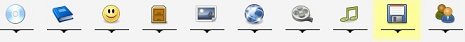

Main Window
The main window contains a menu bar, toolbar, module list, status bar, and a pane where new and existing items can be viewed.
Menu bar
The menu bar provides access to all the functionality available for the currently active module.
Tool bar
The tool bar provides shortcuts to all the same functionality as the menu bar. You can disable the text labels by right-clicking on the toolbar and selecting "Show labels".
Module list
The module list shows the modules you can work with. You can switch between modules at any time (even during imports). The active module is highlighted.

Grouping pane
Allows for grouping the items. more about this.
Item tab
Existing items are displayed in this pane. The displayed items can be opened, updated or deleted.

New item tab
Add new items to Data Crow. New items can be imported from the internet or extracted from files or CD drives.

Charts
Create a simple chart. more about this.